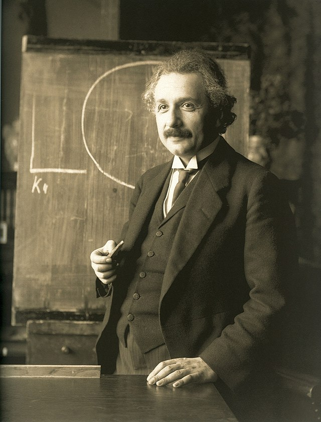
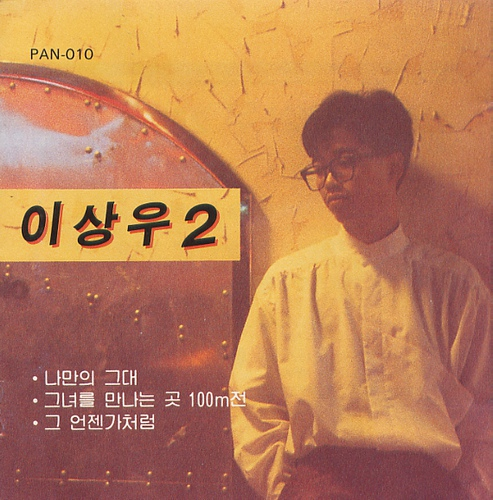
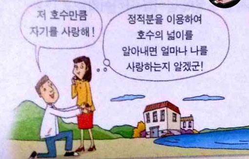
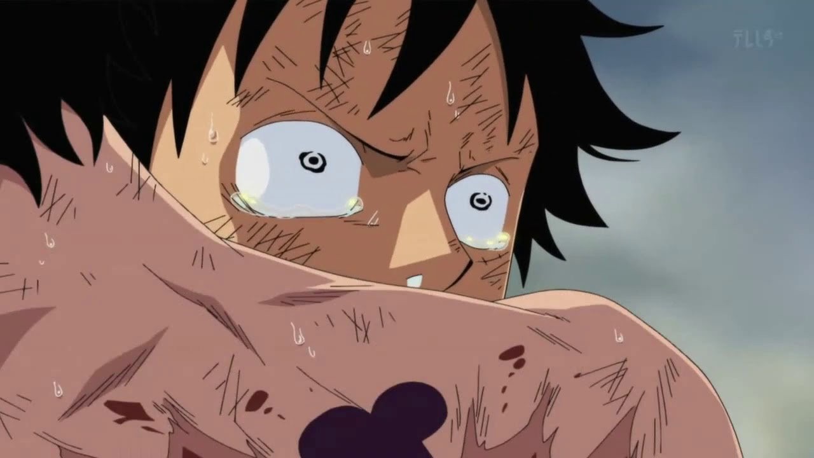
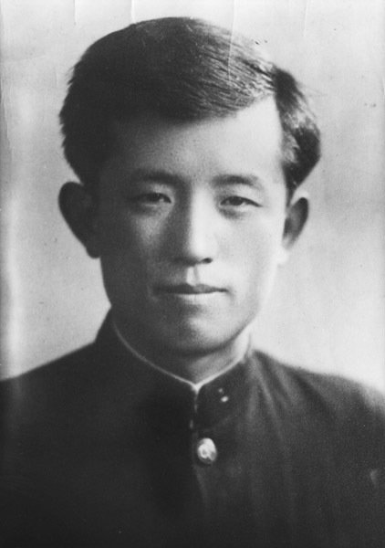
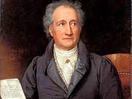
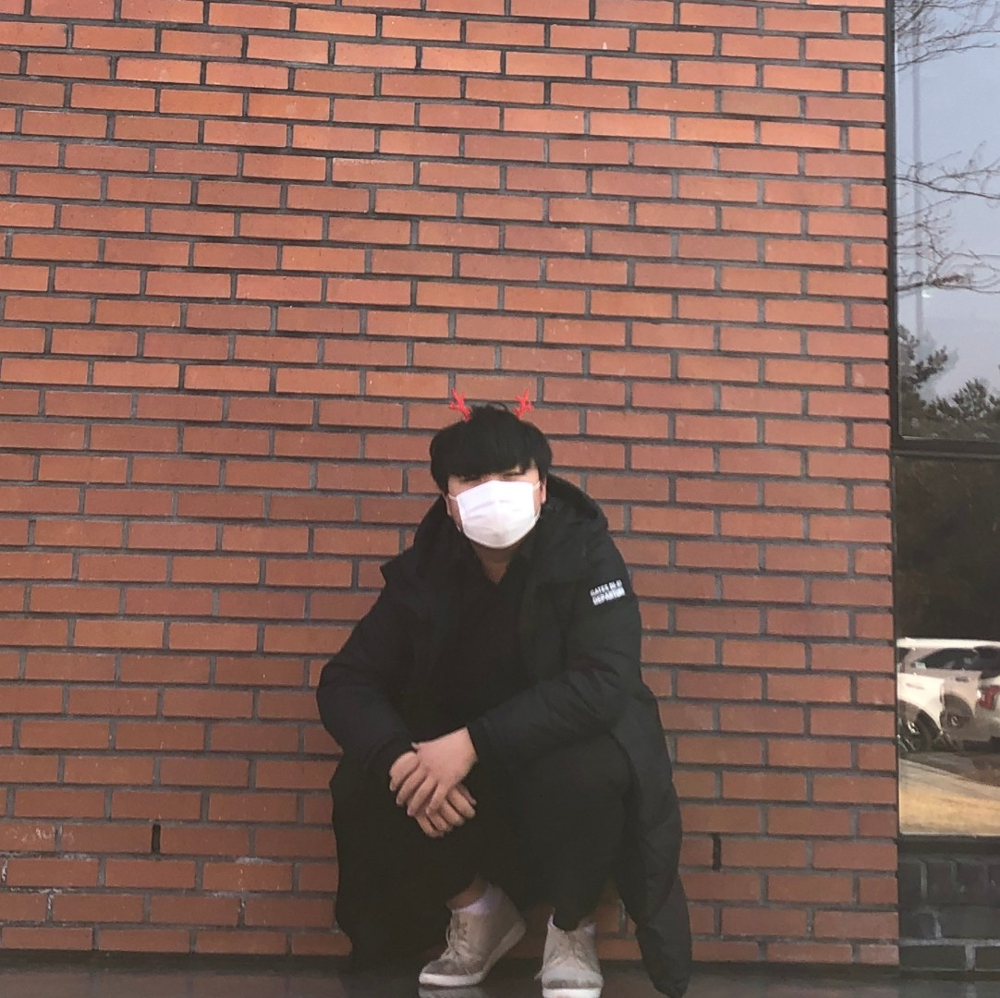
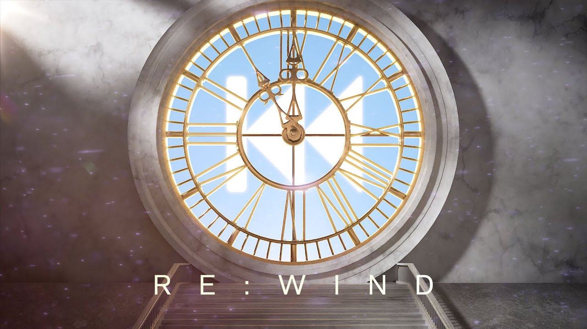

우리 모두는 서로 사랑하고, 서로 사랑 받기 위한 존재입니다.
흔히 사랑의 종류엔 4가지가 있다곤 하죠.
에로스, 스토르게, 필리아, 그리고 아가페.
각각 이성간의 사랑, 혈육간의 사랑, 친구와의 사랑, 그리고 신과 인간의 사랑을 의미합니다.
제가 이번 프로젝트를 진행할 때 비록 니체나 다른 사람들의 명언을 많이 가져오긴 했다만,
저는 확실한 유신론자입니다. 예수님을 믿습니다~
어찌 되었든, 우리는 인생을 살며 사랑이 반드시 필요하다고 느끼게 됩니다.
인생을 사랑하기 위해 존재합니다.
사랑이 곧 행복이기 때문입니다.
이번에는 다시 지구로 돌아와서 붉은 노을을 함께 감상해보고 싶은데요,
저 태양만큼 뜨거운 우리의 사랑을 같이 탐구해봅시다.

“Sich verlieben ist gar nicht das Duemmste,
was der Mensch tut-die Gravitation kann aber nicht dafiir verantwortlich gemacht werden.
사랑에 빠지는 것은 사람이 하는 가장 미련한 짓이 아니며 중력에게 책임을 물을 수도 없다.”
[알베르트 아인슈타인:인간의 측면, 1979]

“장미꽃 한송이를 안겨줄까
무슨말을 어떻게 할까
머리속에 가득한 그녀 모습이
조금씩 내게 다가오는 것 같아
하늘에 구름이 솜사탕이 아닐까
어디 한번 뛰어 올라볼까
오늘은 그녀에게 고백을 해야지
용기를 내야지”
[그녀를 만나는 곳 100m 전]-이상우

"저 호수만큼 자기를 사랑해!"
"정적분을 이용하여 호수의 넓이를 알아내면 얼마나 나를 사랑하는지 알겠군!"
[어느 오래된 유우머 모음집에서, 미상]
“서로 혐오 대신 사랑을 줍시다.
Let's have less hate and more love.”
[Elon Musk, 일론 머스크]
"네가 지금 살고 있고 살아 왔던 이 삶을 너는 다시, 그리고 또다시, 무수히 반복해서 살아야 할 것이다.
거기에 새로운 것은 전혀 없으며, 네 삶의 모든 고통, 모든 기쁨, 크고 작은 모든 것들이 틀림없이 네게로 다시 찾아올 것이다."
(중략)
"Amor fati 아모르 파티, 운명을 사랑해라.
네 운명을 사랑하라.
이것이 지금부터 나의 사랑이 될 것이다!
나는 추한 것과 전쟁을 벌이지 않으련다.
나는 비난하지 않으련다.
나를 비난하는 자도 비난하지 않으련다."
[프리드리히 니체]

"사랑해줘서... 고마워!"
[원피스]-에이스

"별을 노래하는 마음으로
모든 죽어가는 것들을 사랑해야지
그리고 나한테 주어진 길을
걸어가야겠다.
오늘밤에도 별이 바람에 스치운다.”
[서시]-윤동주

"사랑하는 것이 인생이다. 기쁨이 있는 곳에 사람과 사람 사이의 결합이 있는 곳에 또한 기쁨이 있다"
[요한 볼프강 폰 괴테]
“좋아하는 사람이 생기면 모든게 컬러풀하게 보인대”
[4월은 너의 거짓말]-미야조노 카오리

"하나님,
저는 제 자신을 사랑하지도 못하겠는데
어떻게 제가 다른 사람을 사랑 할 수 있을까요?"
[김은호, 2021]

"늘 같은 곳을 바라보던 너의 그 눈이 좋아
변한 세상에서 너만은 그대로 있어 줘
You're my sunshine
늘 같은 곳을 해매이던 너와 내 시간 속에
날 잊어버린다 해도
다시 한번 너를 만나러 갈 테니까"
[RE : WIND]-이세계 아이돌
“Love is an open door
사랑은 열린 문.”
[Love is an Open Door]-겨울왕국
“사랑은 부메랑이다. 자기가 한 만큼 돌아오는 거야.”
[소망관 연애 컨설턴트 전문 조무사]-신영성